İlkokuldan
İlkokuldanProje Ekibi
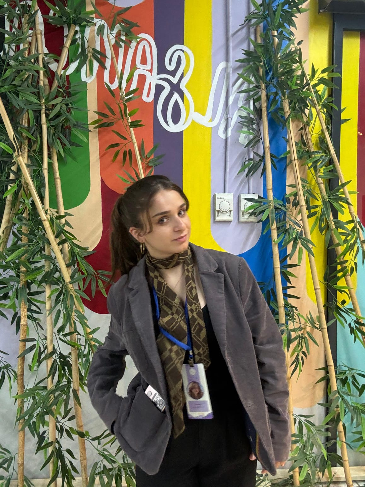
Şadiye GEÇİT
Başvuru Sahibi / Yürütücü
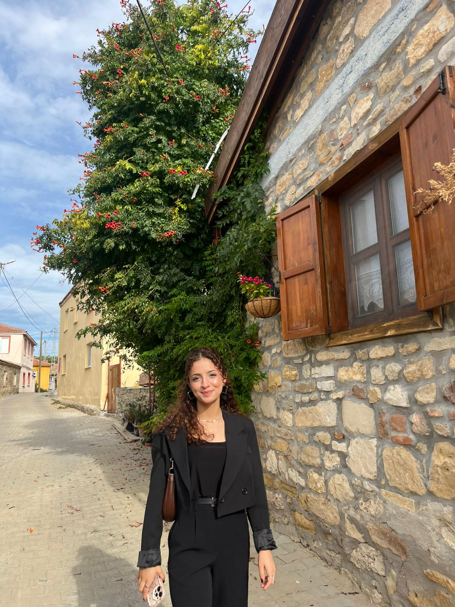
Leyla DALMIŞ
Proje Ortağı
Büşra AY
Proje Ortağı
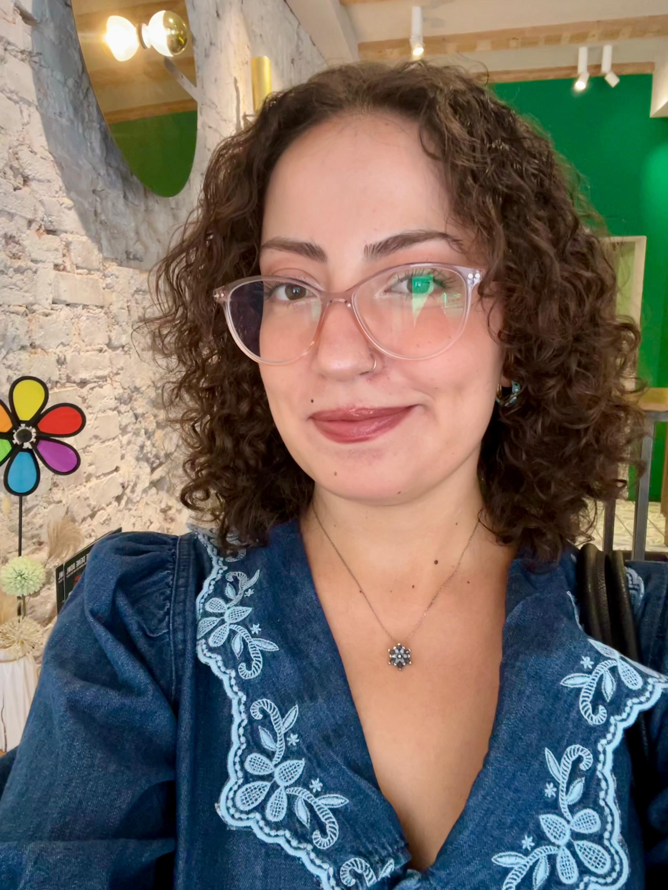
Şeyda GÜVENÇ
Proje Ortağı
Rafet ÖZEL
Proje Ortağı
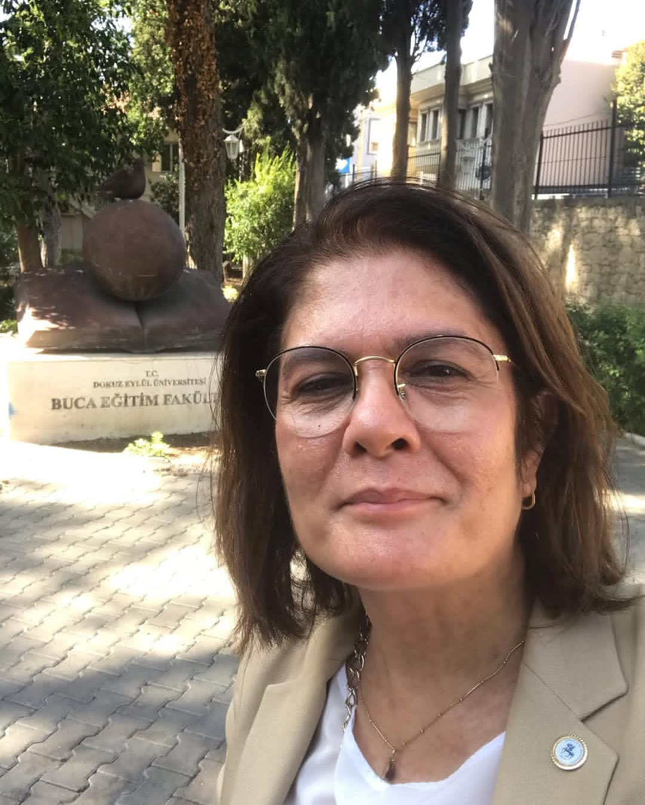
Doç. Dr. Aysun Nüket ELÇİ
Proje Danışmanı
Dokuz Eylül Üniversitesi
Buca Eğitim Fakültesi
Proje Raporu
2209-A projemizin amacı, yöntemi, bilimsel temelleri ve beklenen yaygın etkileri.
Özet ve Amaç
Bu projede amaç, sınıf öğretmenlerinin sınıf içinde matematik derslerinde kullanabileceği ilkokul matematik öğretim programı geometri kazanımlarının öğretiminde kullanılabilecek geogebra etkinliklerini kapsayan etkileşimli kılavuz kitap hazırlamaktır.
Bu uygulama sınıf öğretmenlerinin geometri öğretiminde kullanabileceği etkileşimli kılavuz kitap hazırlamayı hedeflemektedir. Bu uygulama ile uygulamaya katılan proje sahibi ve ortakları sınıf öğretmeni adayları GeoGebra'yı derslerde nasıl uygulayabilecekleri hakkında bilgi sahibi olunması ve sınıf öğretmeni adayları ve sınıf öğretmenleri ile paylaşılması hedeflenmektedir.
Bu proje, nitel araştırma yöntemlerinden doküman analizi şeklinde desende tasarlanmıştır. Veriler hazırlanan ya da hazırlanacak olan GeoGebra etkinliklerinden seçilecektir. Etkinlikler seçilirken öncelikle matematik öğretim programı kazanımlarına uygunluğu hedeflenmektedir. Bu etkinliklerin uygunluğu alanın uzmanlarından alınan görüşler ile sağlanacaktır. Oyunların kartları hazırlanırken anlaşılır ve basit bir şekilde anlatılmasına dikkat edilecektir. Veriler betimsel analiz ile analiz edilecektir.
Proje yürütücüsü ve proje ortaklarının, GeoGebra programını öğrenmeleri, matematik öğretim programı kazanımlarına uygun olanları seçmeleri, matematik derslerinde nasıl uygulayanacağı ve geniş bir arşiv ve bilgi birikimine sahip olacaktır. Projenin yürütücüsü ve proje ortakları edindikleri bu bilgi ve deneyimi sınıf öğretmenleri adayları ve sınıf öğretmenleri ile paylaşabilecekleri bir kitap çalışması ya da dijital ortamda paylaşması projenin bir diğer önemli katkısı olacaktır.
Konunun Önemi, Araştırma Önerisinin Özgün Değeri ve Araştırma Sorusu/Hipotezi
GeoGebra her kademede kullanılabilecek nokta, doğru, doğru parçası, prizma gibi birçok kavramı içeren ve bu kavramlar arasında dinamik ilişkilerin ortaya çıkmasını sağlayan (Diković, 2009) yaygın kullanılan Java tabanlı bir dinamik geometri yazılımıdır. Salzburg Üniversitesinde Marcus Hohenwarter'ın yüksek lisans tez projesi olarak, ortaokullarda matematik eğitimi için tamamen yeni bir araç geliştirmek amacıyla başladığı çalışmasında öğrencilerin geometri ve cebir arasındaki bağlantıları anlayabileceği GeoGebra geliştirilmiştir (Hohenwarter ve Fuchs, 2004).
Dinamik geometri yazılımları sayesinde geometrik çizimler de yapılabilmektedir (Hohenwarter, 2003). GeoGebra ayrıca öğrencilerin matematiksel kavramları daha derinlemesine anlamalarına katkıda bulunabilecek çoklu gösterimleri sunar (Duval, 1999). Geogebra, internet üzerinden özgürce indirilebilen ve dolayısıyla herhangi bir kısıtlama olmaksızın evde veya okulda kullanılabilen bir yazılımdır. (Hohenwarter ve Lavinca, 2007). GeoGebra, öğrencilerin geometrinin temel elemanlarını oluşturma ve bunlardan yararlanarak yeni geometrik yapıları yapılandırmasına yardımcı olur. Kullanımı kolay bir arayüzü vardır.
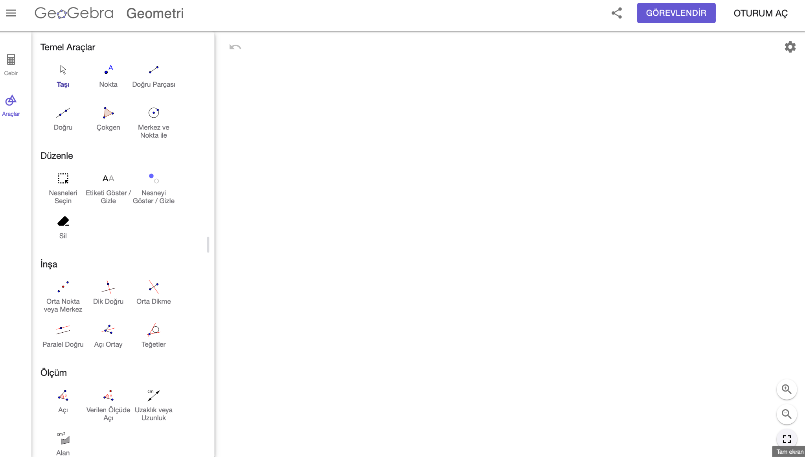
Şekil 1: GeoGebra Geometri Arayüzü
Türkiye'de GeoGebra ile ilgili çalışmalar 2005 yılında başlamıştır. 2009 yılında da GeoGebra'nın kullanım kılavuzu Türkçe'ye çevrilmiştir (Doğan, 2013). Türkiye'de Ankara ve İstanbul'da olmak üzere iki farklı GeoGebra enstitüsü kurulmuştur. Eğitim fakültelerinde GeoGebra dersleri, matematik ders kitaplarında GeoGebra ile ilgili uygulamalara yer verilmiştir. Birçok makale, proje, yüksek lisans ve doktora tez çalışmaları yapılmıştır (Doğan, 2013).
İlkokul 4. Sınıf simetri konusu kazanımına yönelik 5.sınıf düzeyinde yapılan çalışmada GeoGebra'nın akademik başarıyı arttırdığı sonucuna ulaşılmıştır. Öğrenciler bilgisayar destekli öğretimle işlenen dersleri diğer yöntemlerle işlenen derslere göre daha kolay anlaşılır, faydalı, eğlenceli ve zevkli bulmuşlardır. Öğrenciler derslerde bilgisayar kullanımını gerekli bulmaktadır ve bundan sonra da bu yazılımla ders çalışacaklarını ifade etmişlerdir (Özçakır Sümen, 2013).
GeoGebra'nın yaygın kullanılmasının sebebi ücretsiz olması, Türkçe dil özelliğinin olması, hazırlanan materyallerin diğer kullanıcılarla paylaşılması ve bilgisayara kurulumuna gerek kalmadan kolayca materyallere ulaşılabilmesi gibi sebepler sayılabilir.
Amaç ve Hedefler
Bu proje, sınıf öğretmenlerinin sınıf içinde matematik derslerinde kullanabileceği ilkokul matematik öğretim programı geometri kazanımlarının öğretiminde kullanılabilecek geogebra etkinliklerini kapsayan etkileşimli kılavuz kitap hazırlamayı amaçlamaktadır. Bu uygulama sınıf öğretmeni adaylarına ve sınıf öğretmenlerine sınıf içinde matematik dersinde kullanılabileceği GeoGebra'yı tanıma ve tanıtma fırsatı sunacaktır.
Bu çalışmada amaç GeoGebra etkinliklerinin ilkokul matematik öğretim programı kazanımları ile eşlemektir. Bu amaç doğrultusunda, projenin hedefleri aşağıdaki gibidir:
- Sınıf öğretmeni adaylarına ilkokul matematik öğretim programı kazanımları ile ilişkilendirilebilecek sınıfta kullanabilecekleri GeoGebra etkinlikleri tanıtmak.
- Sınıf öğretmeni adaylarına ilkokul matematik öğretim programı kazanımları ile GeoGebra etkinliklerinin eşleştirildiği bir kitabı hazırlamak.
Araştırma Yöntemi
Bu çalışma, nitel araştırma yöntemlerinden biri olan doküman analizi çalışması olup mevcut bir durumun analizi yapılmıştır. Araştırmada kullanılacak olan doküman analizi, yazılı belgelerin içeriğini titizlikle ve sistematik olarak analiz etmek için kullanılan bir nitel araştırma yöntemidir (Wach, 2013). Doküman incelemesi, araştırılması amaçlanan olgu veya olgular hakkında yazılı bilgi kaynaklarının analiz edilmesidir (Yıldırım ve Şimşek, 2013). Doküman incelemesi, aynı zamanda tek başına kullanılabilen bir araştırma tekniğidir (Bowen, 2009).
Araştırmanın veri kaynağını Matematik Dersi Öğretim Programı (MEB,2018) kazanımları oluşturmaktadır. Konu ile ilgili tez, makale, kitap ve web kaynakları kullanılacaktır.
Elde edilen veriler betimsel analiz tekniği bakımından analizi yapılarak sistematik bir şekilde bulgular ortaya konulmuştur. Betimsel analiz bakımından veriler önceden literatürde bulunan temalar dikkate alınarak kodlanır (Yıldırım & Şimşek, 2006:224).
Elde edilen verilerin geçerlik çalışmaları alanlarında uzmanlar tarafından görüşler alınacak ve güvenirlik çalışması için ise Miles ve Huberman'ın (1994) formülünden yararlanacaktır.
Proje Aşamaları
Bu proje dört aşamada gerçekleştirilecektir. İlk aşamada araştırmacılar GeoGebra'nın kullanımını öğrenecektir. İkinci aşamada geometri kazanımlarına uygun etkinliklerin araştırılacaktır. Üçüncü aşamada geometri kazanımlarına uygun etkinlik kartları hazırlanacaktır. Dördüncü ve son aşamada kitap tasarlanacaktır.
Projenin Uygulama Süreci
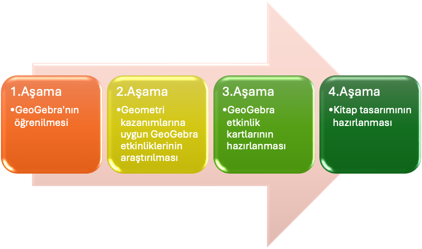
Şekil 2: Proje Uygulama Süreci Aşamaları
1. Aşama
Bu aşamada araştırmacılar GeoGebra programının kullanımını öğreneceklerdir. Araştırmacılar sınıf öğretmeni adayı arkadaşlarına öğreteceklerdir.
2. Aşama
Bu aşamada ilkokul matematik öğretim programı geometri kazanımlarına uygun GeoGebra etkinlikleri araştırılacaktır. GeoGebra etkinlikleri ile ilkokul matematik öğretim programı geometri kazanımlarına uygun olup olmadığına sınıf öğretmeni ve alan uzmanlarının görüşlerine başvurularak son hali verilecektir.
3. Aşama
Bu aşamada ilkokul matematik öğretim programı geometri kazanımlarına uygun GeoGebra etkinlikleri belirlendikten sonra etkinlik kartları tasarlanacaktır. Etkinlik kartlarında Geogebra etkinliği, eşlenen kazanım, etkinliğin nasıl uygulanacağı, etkileşimli bir şekilde ve uygun görseller yer alacaktır.
4. Aşama
Son aşamada GeoGebra etkinlikleri ile ilkokul matematik öğretim programı geometri kazanımlarının eşleştiği bir kitabın bölümlerine karar verilecek ve kitap tasarımı için gerekli araştırmalar yapıldıktan sonra kitabın son hali verilecektir.
Bu aşamalardan sonra yayınevleri ile iletişime geçilerek kitabın basım aşaması yapılacaktır. Bu aşamada, kitap basılamadığı takdirde yapılan çalışmanın ilkokul öğrencilerine ulaşması için sınıf öğretmeni adayları ve sınıf öğretmenlerinin kullanabilmesi için dijital ortamda paylaşılacaktır.
PROJE YÖNETİMİ
İŞ-ZAMAN ÇİZELGESİ (*)
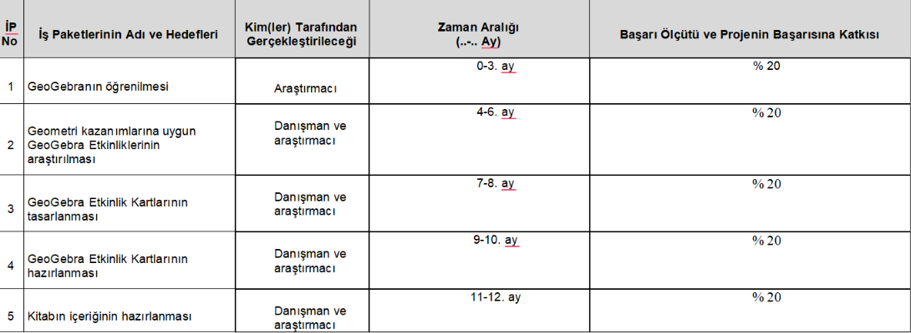
RİSK YÖNETİMİ TABLOSU*
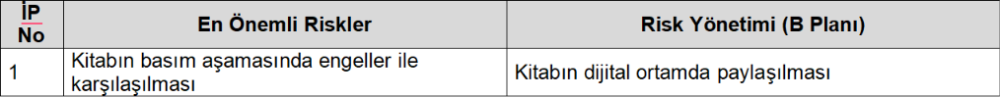
ARAŞTIRMA OLANAKLARI TABLOSU (*)
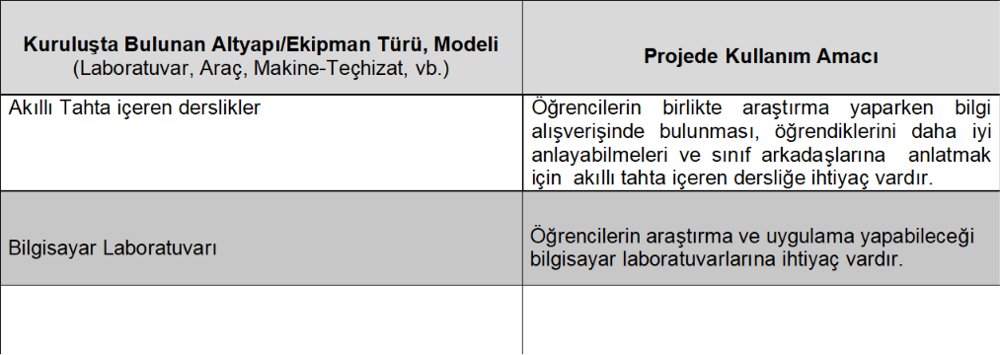
YAYGIN ETKİ
ARAŞTIRMA ÖNERİSİNDEN BEKLENEN YAYGIN ETKİ TABLOSU
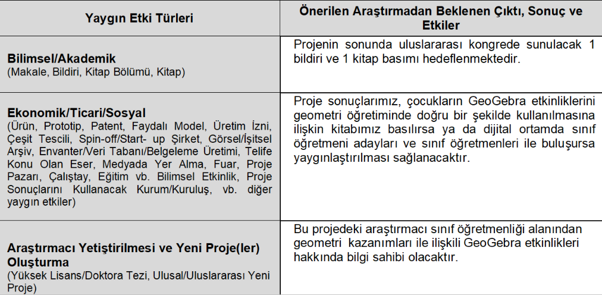
Kaynaklar
- Doğan, M. (2013). Bir dinamik matematik yazılımı: Geocebir (GeoGebra). M. Doğan ve E. Karakırık (Eds.) Matematik eğitiminde teknoloji kullanımı içinde, (s. 125-195). Ankara:Nobel-Atlas.
- Duval, R. (1999). Representation, vision and visualization: Cognitive functions in mathematical thinking. In Proceedings of the twenty-first annual meeting...
- Dikovic, L. (2009). Implementing dynamic mathematics resources with GeoGebra at the college level. International Journal of Emerging Technologies in Learning (iJET), 4(3), 51-54.
- Hohenwarter, M. (2003). Geogebra - dynamische geometrie und algebra der ebene. Der Mathematikunterricht, 49 (4), 33–40.
- Hohenwarter, M., & Fuchs, K. J. (2005). Combination of dynamic geomtrey, algebra and calculus in the software system GeoGebra.
- Hohenwarter, M., & Lavicza, Z. (2007). Mathematics teacher development with ICT: Towards an international GeoGebra institute.
- Milli Eğitim Bakanlığı, (2018). Matematik Dersi Öğretim Programı (İlkokul ve Ortaokul 1, 2, 3, 4, 5, 6, 7 ve 8. Sınıflar). Ankara: MEB.
BÜTÇE TALEP ÇİZELGESİ
BÜTÇE TALEP ÇİZELGESİ
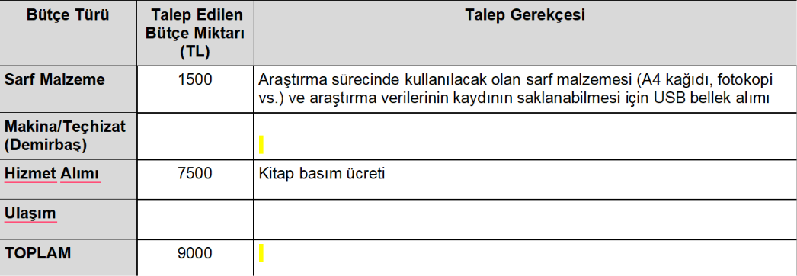
NOT: Bütçe talebiniz olması halinde hem bu tablonun hem de TÜBİTAK Yönetim Bilgi Sistemi (TYBS) başvuru ekranında karşınıza gelecek olan bütçe alanlarının doldurulması gerekmektedir. Yukardaki tabloda girilen bütçe kalemlerindeki rakamlar ile, TYBS başvuru ekranındaki rakamlar arasında farklılık olması halinde TYBS ekranındaki veriler dikkate alınır ve başvuru sonrasında değiştirilemez.
GeoGebra Kullanım Kılavuzu
Etkinliklerimizi kolayca uygulayabilmeniz için GeoGebra'nın temel kullanım adımları.
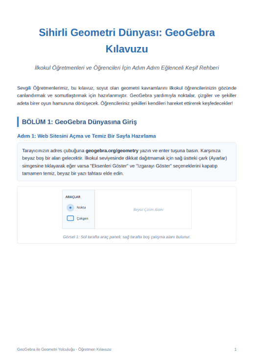
Başlangıç ve Kurulum
GeoGebra'yı kullanmaya başlamak için ilk adımları takip edin. Arayüzün temel elemanları, menüler ve çalışma ekranı düzeni ile tanışın.
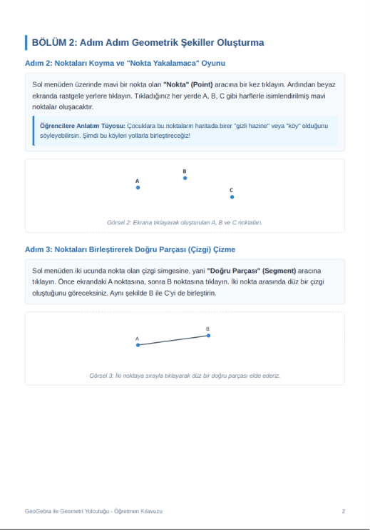
Araç Çubuğu Kullanımı
Üst menüde yer alan araç çubuğu ile geometrik şekiller çizmeyi, noktalar belirlemeyi ve doğrular oluşturmayı öğrenerek etkinliklere temel hazırlayın.
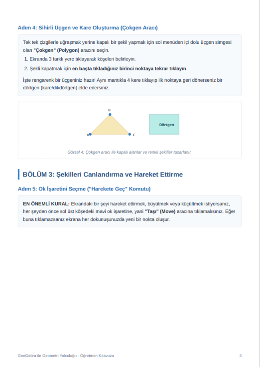
Etkileşim ve Düzenleme
Oluşturduğunuz şekillerin renklerini değiştirmeyi, etiketlerini düzenlemeyi, kaydırıcılar eklemeyi ve nesne özelliklerini nasıl özelleştireceğinizi keşfedin.
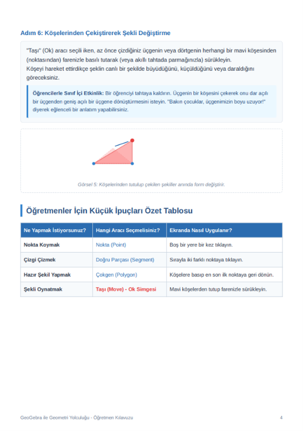
Dosya Kaydetme ve Paylaşma
Hazırladığınız veya düzenlediğiniz GeoGebra etkinliklerini sınıfınızla paylaşmak üzere nasıl kaydedip dışa aktaracağınızı detaylıca öğrenin.
GeoGebra Etkinlikleri
Sınıfınızda hemen kullanmaya başlayabileceğiniz, kazanımlarla eşleştirilmiş interaktif etkinlik kartları.
İLKOKUL PROGRAMI GEOGEBRA BAĞLANTISI KURMA
Türkiye Yüzyılı Maarif Modeli Işığında İlkokul Matematik Eğitiminde GeoGebra Deneyimi
Türkiye Yüzyılı Maarif Modeli’ni incelediğimizde, karşımıza çıkan en net mesaj şu: Artık çocukların bilgiyi ezberlemesini değil; o bilgiyi alıp bir beceriye dönüştürmesini, teknolojiyle harmanlayıp hayatı anlamlandırmasını istiyoruz. Tam da bu noktada, ilkokul kademesinde karşımıza çok büyük bir zorluk çıkıyor: Henüz somut işlemler döneminde olan küçücük çocuklara matematik ve geometrinin o soyut dünyasını nasıl sevdireceğiz? İşte benim pedagojik yaklaşımımda GeoGebra, tam da bu köprüyü kuran, Maarif Modeli'nin felsefesini sınıfta ete kemiğe büründüren harika bir araca dönüşüyor.
Bu iki yaklaşımın sınıf içindeki güçlü bağını şu birkaç temel boyutta bizzat gözlemleyebiliyoruz:
1. Sadece Şekillere Bakmak Yetmez, Onlara "Dokunmak" Gerekir
İlkokul çocuklarına tahtada ya da kitapta donuk bir üçgen göstermek, onların içindeki keşfetme arzusunu tetiklemeye yetmiyor. Maarif Modeli'nin çok önemsediği "merak ve eğilim" unsurlarını canlandırmak için çocuğun o şekle müdahale etmesi lazım. GeoGebra bize bunu veriyor. Çocuk ekrandaki bir üçgenin köşesinden tutup çekiştirdiğinde; açının daraldığını, kenarın uzadığını, yani şeklin aslında "yaşayan" bir yapı olduğunu kendi gözleriyle görüyor. Soyut bir kavram olan geometri, çocuk için adeta bir oyun hamuruna dönüşüyor.
2. Ezberi Bırakıp Akıl Yürütmeyi Eğlenceye Dönüştürmek
Yeni modelde üst düzey düşünme becerilerini, tahminde bulunmayı ve uzamsal muhakemeyi geliştirmeyi hedefliyoruz. Sınıfta GeoGebra’nın sürgü (slider) ya da simetri araçlarını kullandığımızda ders bir anda matematik dersinden çıkıp interaktif bir bulmacaya evriliyor. Örneğin, "ayna simetrisi" konusunu sadece defteri katlayarak anlatmak yerine, programda bir şeklin yansımasını çocuğun kendi elleriyle oluşturmasını sağlıyoruz. "Ben buraya koyarsam karşısında ne olur?" sorusuyla çocuk aslında farkında olmadan derin bir matematiksel muhakeme yapıyor.
3. Teknolojiyi Tüketen Değil, Teknolojiyle Üreten Çocuklar
Maarif Modeli’nin dijital yetkinlik vurgusu, çocukların sadece ekran karşısında vakit geçirmesi anlamına gelmiyor. Biz onların dijital dünyada birer "üretici" olmasını istiyoruz. İlkokul seviyesindeki bir öğrenci GeoGebra’da kendi karesini çizdiğinde, kendi renkli desenlerini tasarladığında aslında erken yaşta çok kıymetli bir dijital okuryazarlık kazanıyor. Bilgisayar onun için sadece çizgi film izlenen bir yer olmaktan çıkıp, bir üretim atölyesine dönüşüyor.
4. Her Çocuğun Hızına Saygı Duymak (Kapsayıcılık)
Sınıflarımız heterojen; her çocuğun öğrenme hızı ve stili bambaşka. Maarif Modeli’nin savunduğu esnek ve farklılaştırılmış öğretim ortamını GeoGebra ile çok rahat yakalayabiliyoruz. Görsel ya da dokunsal zekası baskın olan, kavramları hemen oturtamayan bir öğrenci, hazırladığımız dijital materyaller üzerinde kendi hızıyla, defalarca hata yapıp düzelterek oynayabiliyor. Bu da sınıftaki o "geride kimseyi bırakmama" idealimizi destekliyor.
Sınıfımdan Küçük Bir Uygulama Örneği
Geleneksel yöntemde 3. veya 4. sınıfta çevre hesaplamayı anlatırken tahtaya bir dikdörtgen çizer, kenarları yazar ve toplardık. Çocuk bunu formül olarak ezberlerdi. Maarif Modeli kılavuzluğunda GeoGebra ile yaptığımız uygulamada ise durum çok farklı: Ekrana dinamik bir kare koyuyorum. Çocuk köşesinden tutup kareyi büyüttükçe, kenar uzunluğu arttıkça çevre değerinin de yan taraftaki tabloda tıkır tıkır, eş zamanlı olarak büyüdüğünü izliyor. Aradaki o doğrusal ilişkiyi öğretmen söylemeden, çocuk kendi deneyimiyle "keşfediyor".
Kısacası; GeoGebra benim gözümde sadece bir bilgisayar programı değil; Maarif Modeli'nin hedeflediği "yaparak, yaşayarak ve anlamlandırarak öğrenme" vizyonunu ilkokul sıralarına indiren en güçlü yol arkadaşlarımdan biri.
Geri Bildirim Formu
Sitemizi ve etkinliklerimizi nasıl buldunuz? Lütfen bizimle paylaşın.